MAXimal
добавлено: 25 Apr 2011 22:25
редактировано: 24 Nov 2011 0:14
Содержание [скрыть]
Центры тяжести многоугольников и многогранников
Центром тяжести (или центром масс) некоторого тела называется точка, обладающая тем свойством, что если подвесить тело за эту точку, то оно будет сохранять свое положение.
Ниже рассмотрены двумерные и трёхмерные задачи, связанные с поиском различных центров масс — в основном с точки зрения вычислительной геометрии.
В рассмотренных ниже решениях можно выделить два основных факта. Первый — что центр масс системы материальных точек равен среднему их координат, взятых с коэффициентами, пропорциональными их массам. Второй факт — что если мы знаем центры масс двух непересекающихся фигур, то центр масс их объединения будет лежать на отрезке, соединяющем эти два центра, причём он будет делить его в то же отношении, как масса второй фигуры относится к массе первой.
Двумерный случай: многоугольники
На самом деле, говоря о центре масс двумерной фигуры, можно иметь в виду одну из трёх следующих задач:
- Центр масс системы точек — т.е. вся масса сосредоточена только в вершинах многоугольника.
- Центр масс каркаса — т.е. масса многоугольника сосредоточена на его периметре.
- Центр масс сплошной фигуры — т.е. масса многоугольника распределена по всей его площади.
Каждая из этих задач имеет самостоятельное решение, и будет рассмотрена ниже отдельно.
Центр масс системы точек
Это самая простая из трёх задач, и её решение — известная физическая формула центра масс системы материальных точек:
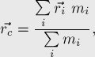
где 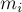 — массы точек, 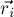 — их радиус-векторы (задающие их положение относительно начала координат), и 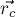 — искомый радиус-вектор центра масс.
В частности, если все точки имеют одинаковую массу, то координаты центра масс есть среднее арифметическое координат точек. Для треугольника эта точка называется центроидом и совпадает с точкой пересечения медиан:
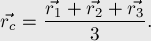
Для доказательства этих формул достаточно вспомнить, что равновесие достигается в такой точке 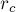, в которой сумма моментов всех сил равна нулю. В данном случае это превращается в условие того, чтобы сумма радиус-векторов всех точек относительно точки , домноженных на массы соответствующих точек, равнялась нулю:
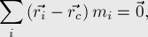
и, выражая отсюда , мы и получаем требуемую формулу.
Центр масс каркаса
Будем считать для простоты, что каркас однороден, т.е. его плотность везде одна и та же.
Но тогда каждую сторону многоугольника можно заменить одной точкой — серединой этого отрезка (т.к. центр масс однородного отрезка есть середина этого отрезка), с массой, равной длине этого отрезка.
Теперь мы получили задачу о системе материальных точек, и применяя к ней решение из предыдущего пункта, мы находим:
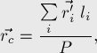
где 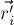 — точка-середина  -ой стороны многоугольника, 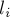 — длина -ой стороны, 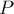 — периметр, т.е. сумма длин сторон.
-ой стороны многоугольника, 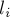 — длина -ой стороны, 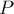 — периметр, т.е. сумма длин сторон.
Для треугольника можно показать следующее утверждение: эта точка является точкой пересечения биссектрис треугольника, образованного серединами сторон исходного треугольника. (чтобы показать это, надо воспользоваться приведённой выше формулой, и затем заметить, что биссектрисы делят стороны получившегося треугольника в тех же соотношениях, что и центры масс этих сторон).
Центр масс сплошной фигуры
Мы считаем, что масса распределена по фигуре однородно, т.е. плотность в каждой точке фигуры равна одному и тому же числу.
Случай треугольника
Утверждается, что для треугольника ответом будет всё тот же центроид, т.е. точка, образованная средним арифметическим координат вершин:
Случай треугольника: доказательство
Приведём здесь элементарное доказательство, не использующее теорию интегралов.
Первым подобное, чисто геометрическое, доказательство привёл Архимед, но оно было весьма сложным, с большим числом геометрических построений. Приведённое здесь доказательство взято из статьи Apostol, Mnatsakanian "Finding Centroids the Easy Way".
Доказательство сводится к тому, чтобы показать, что центр масс треугольника лежит на одной из медиан; повторяя этот процесс ещё дважды, мы тем самым покажем, что центр масс лежит в точке пересечения медиан, которая и есть центроид.
Разобьём данный треугольник 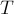 на четыре, соединив середины сторон, как показано на рисунке:
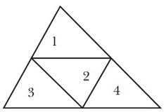
Четыре получившихся треугольника подобны треугольнику с коэффициентом 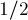.
Треугольники №1 и №2 вместе образуют параллелограмм, центр масс которого лежит в точке пересечения его диагоналей (поскольку это фигура, симметричная относительно обеих диагоналей, а, значит, её центр масс обязан лежать на каждой из двух диагоналей). Точка находится посередине общей стороны треугольников №1 и №2, а также лежит на медиане треугольника :
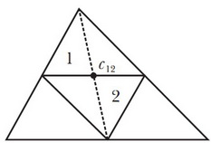
Пусть теперь вектор 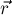 — вектор, проведённый из вершины 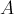 к центру масс треугольника №1, и пусть вектор 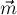 — вектор, проведённый из к точке (которая, напомним, является серединой стороны, на которой она лежит):
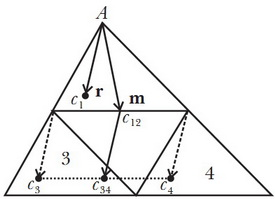
Наша цель — показать, что вектора и коллинеарны.
Обозначим через 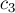 и 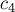 точки, являющиеся центрами масс треугольников №3 и №4. Тогда, очевидно, центром масс совокупности этих двух треугольников будет точка 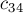, являющаяся серединой отрезка 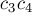. Более того, вектор от точки к точке совпадает с вектором .
Искомый центр масс  треугольника лежит посередине отрезка, соединяющего точки и (поскольку мы разбили треугольник на две части равных площадей: №1-№2 и №3-№4):
треугольника лежит посередине отрезка, соединяющего точки и (поскольку мы разбили треугольник на две части равных площадей: №1-№2 и №3-№4):
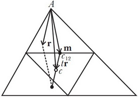
Таким образом, вектор от вершины к центроиду равен 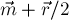. С другой стороны, т.к. треугольник №1 подобен треугольнику с коэффициентом , то этот же вектор равен 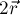. Отсюда получаем уравнение:
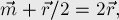
откуда находим:
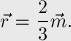
Таким образом, мы доказали, что вектора и коллинеарны, что и означает, что искомый центроид лежит на медиане, исходящей из вершины .
Более того, попутно мы доказали, что центроид делит каждую медиану в отношении , считая от вершины.
Случай многоугольника
Перейдём теперь к общему случаю — т.е. к случаю мноугоугольника. Для него такие рассуждения уже неприменимы, поэтому сведём задачу к треугольной: а именно, разобьём многоугольник на треугольники (т.е. триангулируем его), найдём центр масс каждого треугольника, а затем найдём центр масс получившихся центров масс треугольников.
Окончательная формула получается следующей:
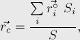
где 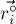 — центроид -го треугольника в триангуляции заданного многоугольника, 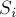 — площадь -го треугольника триангуляции, 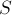 — площадь всего многоугольника.
Триангуляция выпуклого многоугольника — тривиальная задача: для этого, например, можно взять треугольники 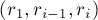, где 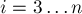.
Случай многоугольника: альтернативный способ
С другой стороны, применение приведённой формулы не очень удобно для невыпуклых многоугольников, поскольку произвести их триангуляцию — сама по себе непростая задача. Но для таких многоугольников можно придумать более простой подход. А именно, проведём аналогию с тем, как можно искать площадь произвольного многоугольника: выбирается произвольная точка 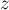, а затем суммируются знаковые площади треугольников, образованных этой точкой и точками многоугольника: 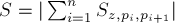. Аналогичный приём можно применить и для поиска центра масс: только теперь мы будем суммировать центры масс треугольников 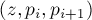, взятых с коэффициентами, пропорциональными их площадям, т.е. итоговая формула для центра масс такова:
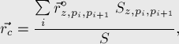
где — произвольная точка, 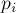 — точки многоугольника, 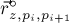 — центроид треугольника , 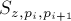 — знаковая площадь этого треугольника, — знаковая площадь всего многоугольника (т.е. 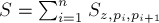).
Трёхмерный случай: многогранники
Аналогично двумерному случаю, в 3D можно говорить сразу о четырёх возможных постановках задачи:
- Центр масс системы точек — вершин многогранника.
- Центр масс каркаса — рёбер многогранника.
- Центр масс поверхности — т.е. масса распределена по площади поверхности многогранника.
- Центр масс сплошного многогранника — т.е. масса распределена по всему многограннику.
Центр масс системы точек
Как и в двумерном случае, мы можем применить физическую формулу и получить тот же самый результат:
который в случае равных масс превращается в среднее арифметическое координат всех точек.
Центр масс каркаса многогранника
Аналогично двумерному случаю, мы просто заменяем каждое ребро многогранника материальной точкой, расположенной посередине этого ребра, и с массой, равной длине этого ребра. Получив задачу о материальных точках, мы легко находим её решение как взвешенную сумму координат этих точек.
Центр масс поверхности многогранника
Каждая грань поверхности многогранника — двухмерная фигура, центр масс которой мы умеем искать. Найдя эти центры масс и заменив каждую грань её центром масс, мы получим задачу с материальными точками, которую уже легко решить.
Центр масс сплошного многогранника
Случай тетраэдра
Как и в двумерном случае, решим сначала простейшую задачу — задачу для тетраэдра.
Утверждается, что центр масс тетраэдра совпадает с точкой пересечения его медиан (медианой тетраэдра называется отрезок, проведённый из его вершины в центр масс противоположной грани; таким образом, медиана тетраэдра проходит через вершину и через точку пересечения медиан треугольной грани).
Почему это так? Здесь верны рассуждения, аналогичные двумерному случаю: если мы рассечём тетраэдр на два тетраэдра с помощью плоскости, проходящей через вершину тетраэдра и какую-нибудь медиану противоположной грани, то оба получившихся тетраэдра будут иметь одинаковый объём (т.к. треугольная грань разобьётся медианой на два треугольника равной площади, а высота двух тетраэдров не изменится). Повторяя эти рассуждения несколько раз, получаем, что центр масс лежит на точке пересечения медиан тетраэдра.
Эта точка — точка пересечения медиан тетраэдра — называется его центроидом. Можно показать, что она на самом деле имеет координаты, равные среднему арифметическому координат вершин тетраэдра:
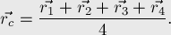
(это можно вывести из того факта, что центроид делит медианы в отношении 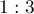)
Таким образом, между случаями тетраэдра и треугольника принципиальной разницы нет: точка, равная среднему арифметическому вершин, является центром масс сразу в двух постановках задачи: и когда массы находится только в вершинах, и когда массы распределены по всей площади/объёму. На самом деле, этот результат обобщается на произвольную размерность: центр масс произвольного симплекса (simplex) есть среднее арифметическое координат его вершин.
Случай произвольного многогранника
Перейдём теперь к общему случаю — случаю произвольного многогранника.
Снова, как и в двумерном случае, мы производим сведение этой задачи к уже решённой: разбиваем многогранник на тетраэдры (т.е. производим его тетраэдризацию), находим центр масс каждого из них, и получаем окончательный ответ на задачу в виде взвешенной суммы найденных центров масс.